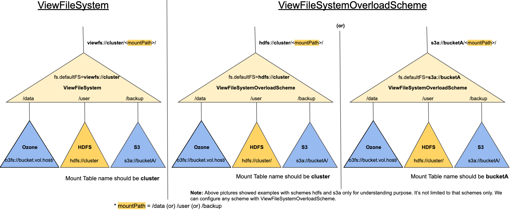

The View File System Overload Scheme introduced to solve two key challenges with the View File System(ViewFS). The first problem is, to use ViewFS, users need to update fs.defaultFS with viewfs scheme (viewfs://). The second problem is that users need to copy the mount-table configurations to all the client nodes. The ViewFileSystemOverloadScheme is addressing these challenges.
The View File System Overload Scheme is an extension to the View File System. This will allow users to continue to use their existing fs.defaultFS configured scheme or any new scheme name instead of using scheme viewfs. Mount link configurations key, value formats are same as in ViewFS Guide. If a user wants to continue use the same fs.defaultFS and wants to have more mount points, then mount link configurations should have the ViewFileSystemOverloadScheme initialized uri’s hostname as the mount table name. Example if fs.defaultFS is hdfs://mycluster, then the mount link configuration key name should be like in the following format fs.viewfs.mounttable.*mycluster*.link.<mountLinkPath>. Even if the initialized fs uri has hostname:port, it will simply ignore the port number and only consider the hostname as the mount table name. We will discuss more example configurations in following sections. If there are no mount links configured with the initializing uri’s hostname as the mount table name, then it will automatically consider the current uri as fallback(fs.viewfs.mounttable.*mycluster*.linkFallback) target fs uri. If the initialized uri contains path part, it will consider only scheme and authority part, but not the path part. Example, if the initialized uri contains hdfs://mycluster/data, it will consider only hdfs://mycluster as fallback target fs uri. The path part data will be ignored.
Another important improvement with the ViewFileSystemOverloadScheme is, administrators need not copy the mount-table.xml configuration file to 1000s of client nodes. Instead, they can keep the mount-table configuration file in a Hadoop compatible file system. So, keeping the configuration file in a central place makes administrators life easier as they can update mount-table in single place.
To use this class, the following configurations needed to be added in core-site.xml file.
<property> <name>fs.<scheme>.impl</name> <value>org.apache.hadoop.fs.viewfs.ViewFileSystemOverloadScheme</value> </property>
Here <scheme> should be same as the uri-scheme configured in fs.defautFS. For example if fs.defaultFS was configured with hdfs://mycluster, then the above configuration would be like below:
<property> <name>fs.hdfs.impl</name> <value>org.apache.hadoop.fs.viewfs.ViewFileSystemOverloadScheme</value> </property>
Example 1:
If users want some of their existing cluster (hdfs://cluster) data to mount with hdfs(hdfs://cluster) and other object store clusters(o3fs://bucket1.volume1.omhost/, s3a://bucket1/), the following example configurations can show how to add mount links.
<property> <name>fs.viewfs.mounttable.cluster.link./user</name> <value>hdfs://cluster/user</value> </property> <property> <name>fs.viewfs.mounttable.cluster.link./data</name> <value>o3fs://bucket1.volume1/data</value> </property> <property> <name>fs.viewfs.mounttable.cluster.link./backup</name> <value>s3a://bucket1/backup/</value> </property>
Let’s consider the following operations to understand where these operations will be delegated based on mount links.
Op1: Create a file with the path hdfs://cluster/user/fileA, then physically this file will be created at hdfs://cluster/user/fileA. This delegation happened based on the first configuration parameter in above configurations. Here /user mapped to hdfs://cluster/user/.
Op2: Create a file the path hdfs://cluster/data/datafile, then this file will be created at o3fs://bucket1.volume1.omhost/data/datafile. This delegation happened based on second configurations parameter in above configurations. Here /data was mapped with o3fs://bucket1.volume1.omhost/data/.
Op3: Create a file with the path hdfs://cluster/backup/data.zip, then physically this file will be created at s3a://bucket1/backup/data.zip. This delegation happened based on the third configuration parameter in above configurations. Here /backup was mapped to s3a://bucket1/backup/.
Example 2:
If users want some of their existing cluster (s3a://bucketA/) data to mount with other hdfs cluster(hdfs://cluster) and object store clusters(o3fs://bucket1.volume1.omhost/, s3a://bucketA/), the following example configurations can show how to add mount links.
<property> <name>fs.viewfs.mounttable.bucketA.link./user</name> <value>hdfs://cluster/user</value> </property> <property> <name>fs.viewfs.mounttable.bucketA.link./data</name> <value>o3fs://bucket1.volume1.omhost/data</value> </property> <property> <name>fs.viewfs.mounttable.bucketA.link./salesDB</name> <value>s3a://bucketA/salesDB/</value> </property>
Let’s consider the following operations to understand to where these operations will be delegated based on mount links.
Op1: Create a file with the path s3a://bucketA/user/fileA, then this file will be created physically at hdfs://cluster/user/fileA. This delegation happened based on the first configuration parameter in above configurations. Here /user mapped to hdfs://cluster/user.
Op2: Create a file the path s3a://bucketA/data/datafile, then this file will be created at o3fs://bucket1.volume1.omhost/data/datafile. This delegation happened based on second configurations parameter in above configurations. Here /data was mapped with o3fs://bucket1.volume1.omhost/data/.
Op3: Create a file with the path s3a://bucketA/salesDB/dbfile, then physically this file will be created at s3a://bucketA/salesDB/dbfile. This delegation happened based on the third configuration parameter in above configurations. Here /salesDB was mapped to s3a://bucket1/salesDB.
Note: In above examples we used create operation only, but the same mechanism applies to any other file system APIs here.
The following picture shows how the different schemes can be used in ViewFileSystemOverloadScheme compared to the ViewFileSystem.

Note: In ViewFsOverloadScheme, by default the mount links will not be represented as symlinks. The permission bits and isDirectory value will be propagated from the target directory/file.
To enable central mount table configuration, we need to configure fs.viewfs.mounttable.path in core-site.xml with the value as the Hadoop compatible file system directory/file path, where the mount-table.<versionNumber>.xml file copied. Here versionNumber is an integer number and need to increase the version number and upload new file in same directory.
The ViewFileSystemOverloadScheme always loads the highest version number mount-table.<versionNumber>.xml. Please don’t replace the file with same name. Always increment the version number to take new file picked by newly initializing clients. Why we don’t recommend to replace the files is that, some client might have already opened the connections to old mount-table files already and in middle of loading configuration files, and replacing files can make them fail.
<property> <name>fs.viewfs.mounttable.path</name> <value>hdfs://cluster/config/mount-table-dir</value> </property>
If you are sure, you will never do updates to mount-table file, you can also configure file path directly like below. If you configure file path, it will not check any highest version number loading. Whatever file configured it will be loaded. However file name format should be same.
<property> <name>fs.viewfs.mounttable.path</name> <value>hdfs://cluster/config/mount-table-dir/mount-table.<versionNumber>.xml</value> </property>
Note: we recommend not to configure mount-links in core-site.xml if you configure above valid path. Otherwise both mount links will be mixed and can lead to a confused behavior.
If you copy the mount-table.<versionNumber>.xml, you may consider having big replication factor depending on your cluster size. So, that file will be available locally to majority of clients as applications(MR/YARN/HBASE..etc) use locality on HDFS when reading mount-table.<versionNumber>.xml.
Please refer to the HDFSCommands Guide
Accessing paths like hdfs:///foo/bar, hdfs:/foo/bar or viewfs:/foo/bar, where the authority (cluster name or hostname) of the path is not specified, is very common. This is especially true when the same code is expected to run on multiple clusters with different names or HDFS Namenodes.
When ViewFileSystemOverloadScheme is used (as described above), and if (a) the scheme of the path being accessed is different from the scheme of the path specified as fs.defaultFS and (b) if the path doesn’t have an authority specified, accessing the path can result in an error like Empty Mount table in config for viewfs://default/. For example, when the following configuration is used but a path like viewfs:/foo/bar or viewfs:///foo/bar is accessed, such an error arises.
<property> <name>fs.hdfs.impl</name> <value>org.apache.hadoop.fs.viewfs.ViewFileSystemOverloadScheme</value> </property> <property> <name>fs.defaultFS</name> <value>hdfs://cluster/</value> </property>
To avoid the above problem, the configuration fs.viewfs.mounttable.default.name.key has to be set to the name of the cluster, i.e, the following should be added to core-site.xml
<property> <name>fs.viewfs.mounttable.default.name.key</name> <value>cluster</value> </property>
The string in this configuration cluster should match the name of the authority in the value of fs.defaultFS. Further, the configuration should have a mount table configured correctly as in the above examples, i.e., the configurations fs.viewfs.mounttable.*cluster*.link.<mountLinkPath> should be set (note the same string cluster is used in these configurations).
If users have a HTTP server in trusted network and don’t need authentication mechanism to it, you can also place your mount-table.xml file in that server and configure XInclude xml tag with mount-table.xml file.
<configuration xmlns:xi="http://www.w3.org/2001/XInclude"> <xi:include href="http://myserver/mountTable/mountTable.xml" /> </configuration>
The Apache Hadoop configuration has the capability to read the http urls from XInclude and load into configurations. If you choose this option, please don’t configure mount-table configuration items in core-site.xml or at fs.viewfs.mounttable.path. Please note, Hadoop configuration XInclude does not use SPNego authentication when opening url. So, this will not work if http server where you placed mount-table.xml needs authentication.